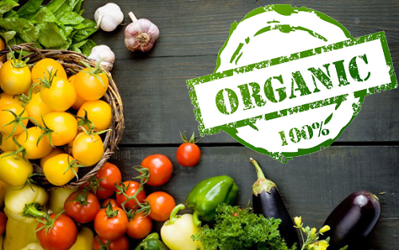
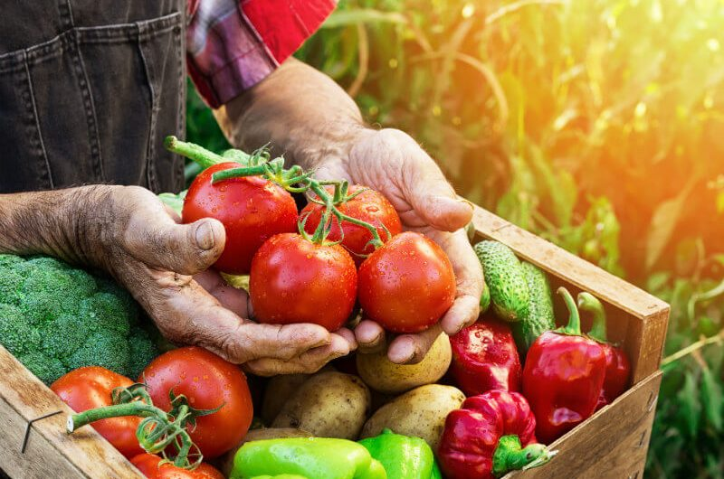

INTRODUCING ABOUT COMPANY:
Organica: is system is development and analysis of owner is to set up to the first year 2013 with the item help user
Vietnam has an life life and strong more information through the type of the basic owner has certificate ,hentication
natural and non-GMO (GMO).
Organic food has international certification,
perfect for the health of you and your baby as well as your family.
In 2015, after many efforts in self-development and production, the Organic farm in Long Thanh, Dong Nai was
certified organic by the US (USDA) and the European Union (EU), becoming a vegetable farm The first organic
tropical in Vietnam. Following that, in 2017, Ba Vi Organic Garden was also assessed by Control Union to meet
American and European organic standards. Organica also uses Traceverified, Vietnam's only electronic traceability
service, with the desire for information transparency and commitment to its organic farming process with consumers

In addition to self-invested organic farms, Organic is also currently linking and supporting farmers in
many localities to convert to organic farming to obtain international organic certification to
purchase products.
Besides products developed on farms, Organic also cooperates with other organizations with organic
certification to distribute products to Vietnamese consumers and import organic products for
distribution in Vietnam. country. Up to now, Organic has nearly 1,000 certified organic products of
all kinds, including fresh foods, dry foods, organic spices, organic cosmetics, home care products,
and organic products. personal care products made from internationally certified organic cotton.
Organic is currently working with partners in the US and EU to bring back to Vietnam the missing
organic products in Vietnam to perfect the range of organic products to meet the requirements of
customers.

According to the commitment from the beginning, Organic stores spend 80% of the display area and
product categories to sell certified organic foods at home and abroad. The remaining 20% is for
products that are in the process of converting to organic farming, natural products with
environmentally friendly certifications (such as MSC- Sustainable Fisheries; or UTZ- certified
development. sustainable development for cocoa, coffee and tea), and a small part of that is a local
specialty product. All these products have certificates of food hygiene and safety and traceability.
Organic currently has a store in Ho Chi Minh City. In Ho Chi Minh City, the System of Organica farms
and associated farms has developed stably in many localities such as Long Thanh (Dong Nai); Ba Vi
(Hanoi); Lac Duong, Don Duong (Lam Dong), Binh Phuoc.